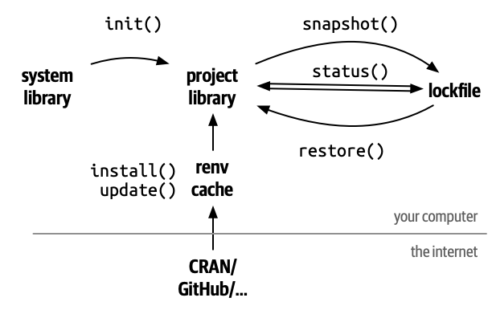

Slides from previous years are also available. You can take a peek, though I’ll make some updates this year—likely not major ones.
R and RStudio
R is a free and open-source programming language for statistical computing and graphics.
RStudio is an integrated development environment (IDE) for coding in R.
An IDE is a set of tools that helps you code.
We use RStudio to write our R codes.
R packages
R packages are the fundamental units of reproducible R code.
They can include functions, data, or both, along with documentation.
Think of them as plug-ins that enhance the functionality of existing software.
For example, web browser extensions like ad blockers add additional features that the original browser doesn’t have.
In this course, we use additional R packages to work with geospatial data in R.
Reproducible environment
An environment is the system where a program is run, including hardware and software such as operating system dependencies, programming language, packages, their configuration, and versions.
Just as running 1000 meters affects individuals differently, running code on different computers or with different package versions can produce varied results.
A reproducible environment ensures that everyone gets the same result by keeping the environment consistent.
Ideally, we would run the same program on the same system with the same software versions for maximum reproducibility.
In practice, we typically focus on ensuring that key software—such as R and R package versions—is the same.
renv package

renv is an R package that helps create reproducible environments for R projects.
It records the R version and all R packages along with their versions in a lockfile.
A lockfile is a text file that stores all the environment information.
Code hosting and Github
Code hosting involves storing code online to facilitate sharing, management, and collaboration with others.
One of the most popular code hosting platforms is GitHub (owned by Microsoft).
Both the textbook and the companion R package used in this course are hosted on GitHub.
GitHub is like a cloud drive (similar to OneDrive or Dropbox) but specialized for storing code (more specifically plain text files), including R scripts.
R Markdown vs. R
R Markdown is a file format that combines R code, its results (after knitting), and accompanying text.
It uses the file extension .Rmd and essentially is a plain text file integrating markdown and R.
When you knit the file, the code is executed, the results are inserted, and the document is rendered into formats such as PDF, HTML, or other report file types.
You can start by creating an Rmd file on the lab computer.
You can start by trying out R on the lab computer. Later, we’ll set it up on your personal computer.
R can be used as a calculator, using intuitive symbols for these operations:
1+5
[1] 6
8-3
[1] 5
3*4
[1] 12
9/3
[1] 3
R basics: assigning values
One of the cornerstones of programming languages is assignment. You can assign a value/object to a name using <- (suggested R style) or = (“Python” style).
a <-1b <-3a + b
[1] 4
c =7d =5c * d
[1] 35
R basics: built-in functions
R comes with many built-in functions. The calling syntax is function(parameter1, parameter2, ...). Additionally, with extra R packages, there are even more functions you can use.
library(MASS)# integrate the sin function from 0 to pi.area(sin, 0, pi)
[1] 2
R basics: indexing
Indexing is the process of selecting specific values from an object based on their index location. Whenever you see [] or $ in R, some form of indexing is happening.
Flow control is an important component of any programming language. In R, the if-else statement and loops work as follows:
x <-6if (x >5) { print("Greater than 5") } else {print("Less or equal to 5")}
[1] "Greater than 5"
for (i in1:3) {print(i)}
[1] 1
[1] 2
[1] 3
R basics: custom functions
To define your own function in R, you can use the following syntax. Note that the last line of code is automatically returned by R, though a “Python” style return statement is also valid in R.
Download the Applied-Spatial-Statistics zip file from Avenue (or directly from GitHub: github.com/paezha/Applied-Spatial-Statistics) and unzip it. You should then have a folder with the following structure:
Click the Packages tab, then the renv button, and finally select the Restore Library option.
Click the Restore button in the pop-up panel.
Install \(\LaTeX\)
\(\LaTeX\) is a high-quality typesetting system. While it may seem as a language, understanding it isn’t necessary for our purposes. We will use it to export Rmd files with results into PDF files.
If you already use \(\LaTeX\) and have it installed through MiKTeX or TeX Live, you can skip this step.
If you are unfamiliar with \(\LaTeX\) and don’t have it installed yet, simply run the following R code in the console to install it:
tinytex::install_tinytex()
Finish setup of the R environment
After completing all the steps above, you should now have a fully functional R environment.
You should keep the folder Applied-Spatial-Statistics on your computer.
You may rename it to anything you like, but make sure you know where it is located (its directory path).
Starting next week, you will be working inside this folder.
All lab activity code files (Rmd files) will be stored here.
This is mandatory because the renv package ties the environment (R packages) to this project folder.
Similar to Python virtual environments, it is not a system‑wide setup (for R packages).
If you remove the folder or try to run the code outside of it, you will need to restore the environment again.